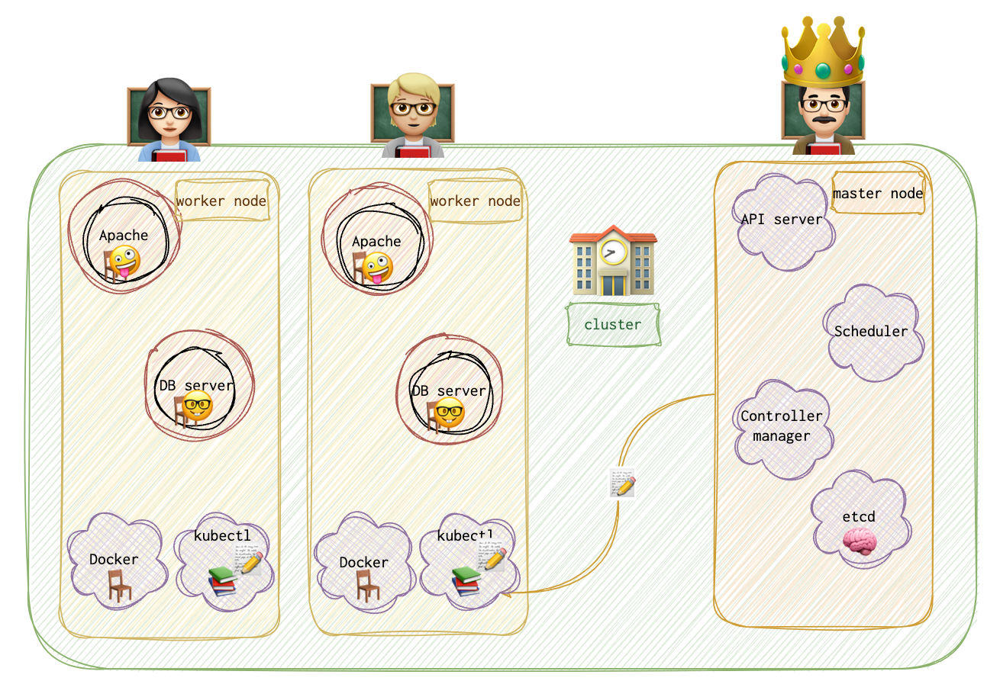

If you want to know more about Kubernetes, its security and attack vectors, this article will help.
Architecture
Containers make up a node. Nodes make up a cluster. Nodes are VMs or physical machines with running containers. Master - another node. Responsible for the orchestration. Kubernetes containers are encapsulated in PODs, the smallest object one can create in kuberbetes. The only scenario when one POD has several containers is when these are containers of different types, one of them, for example, providing some essential functionality to the main container.
- API server
- etcd - key/value store. Keeps logs to ensure there are no conflicts between different masters and clusters. Holds information about all the nodes and clusters and masters.
- kubelet - an agent that runs on each node in a cluster. Ensures that containers are running as expected.
- Scheduler - responsible for distributing containers among multiple nodes. It looks for newly created containers and assigns them to nodes.
- Controller - the brain 🧠 of the orchestration. Responsible for noticing when a container goes down. He’s like an on-call doctor or ambulance. It brings up new containers in case it’s needed.
- Container runtime - underlying software. Examples: docker, rkt, CRI-O. Even when using Kubernetes, you can use docker runtime 🤷🏻♀️.
💡 I’ve now thought, and I wonder if that’s correct, that POD is very close to the word application in the Kubernetes world.

Master vs Worker
Master has a kube API server (</> kube-apiserver). It’s a process. It has a etcd, which logs everything. The controller and the scheduler are also there.
Slave (worker or minion) has a container runtime and containers running (</> kubelet). Kubelet agent interacts with the kube-apiserver.
Replication Controller
Allows running several instances of the same application in a cluster for higher availability. It makes sure the predefined amount of pods are running at a time, even if it’s one. If it is one, in case it fails, replication controller will bring up another one. Spans across multiple nodes. Replication controller != Replica set (new technology).
Deployment
Some other wrapper around RC and pods… . For seamless updates.
apiVersion: apps/v1
kind: Deployment
metadata:
name: appname-replicaset
labels:
app: nameoftheapp
type: frontend
spec:
template:
metadata:
name: nginx
labels:
app: nginx
tier: frontend
spec:
containers:
- name: nginx
image: nginx
replicas: 3
selector:
matchLabels:
type: frontend
Security
❗️ Containers share the same kernel as their host
- Escaping a container - host network mode (https://unit42.paloaltonetworks.com/breaking-docker-via-runc-explaining-cve-2019-5736/)
-
- Insecure container configurations: Certain container configurations can increase the risk of a breakout. For example, running containers as root, enabling the Docker
--privilegedflag, or using insecure defaults can all potentially allow for container escapes.
- Insecure container configurations: Certain container configurations can increase the risk of a breakout. For example, running containers as root, enabling the Docker
- Vulnerabilities in container runtime: If there are vulnerabilities in the container runtime itself (like Docker, containerd, cri-o etc.), they can be exploited to escape the container.
- kernel vulnerabilities
- Misconfigured container capabilities: Linux kernel capabilities are powerful privileges that can be assigned to a container. If a container has been mistakenly given a capability like
CAP_SYS_ADMINorCAP_DAC_READ_SEARCH, it could perform many powerful operations that can lead to a breakout.
-
- Vulnerability in the application running atop the pod.
- Misconfiguration.
Scenarios
Powerded by ChatGPT
Scenario: A critical Kubernetes service in your organization is experiencing frequent downtime. The logs indicate an unusual network traffic pattern, suggesting a potential security issue. How would you investigate this situation? Answer: I’d start by isolating the affected service to prevent potential spread of the issue. I would then examine the logs for any signs of unauthorized access, such as unfamiliar IP addresses or suspicious user agents. I’d also inspect the network traffic patterns in detail, correlating it with the logs to identify any possible intrusion or DDoS attacks. If a security issue is confirmed, I would involve the security team to mitigate the issue, and work on strengthening the service’s security, possibly by implementing network policies, enhancing RBAC controls, or setting up intrusion detection/prevention systems.
Scenario: You notice that a certain pod in a Kubernetes deployment is constantly running at high CPU usage, even during off-peak hours. What steps would you take to investigate this? Answer: High CPU usage can be a sign of either a legitimate workload or a compromised pod. I would first check the processes running on the pod to identify the cause of the high CPU usage. If the processes are legitimate, I would then consider whether the pod is properly sized for the workload. If not, I might need to adjust its resource requests and limits. If the processes appear suspicious, however, I would investigate it as a potential security incident. This might involve checking the pod’s logs, network connections, and file modifications. If a breach is confirmed, the pod should be isolated and the vulnerability that allowed the compromise should be addressed.
Scenario: There’s a suspicion that a malicious insider is creating unauthorized Kubernetes deployments in your environment. How would you confirm this suspicion and prevent future occurrences? Answer: I would start by auditing the Kubernetes API server logs, which record all actions taken in the Kubernetes environment. By filtering these logs for deployment creation events, I could identify who created any unauthorised deployments. To prevent future occurrences, I’d ensure that we have Role-Based Access Control (RBAC) properly configured to limit what each user can do. I would also recommend setting up alerts for any unauthorized attempts to create deployments, and providing training for staff about the importance of following approved procedures.
GCP specifics
Google Kubernetes Engine (GKE) in Google Cloud Platform (GCP) comes with several security features and considerations:
-
Workload Identity: This feature allows you to bind Kubernetes service accounts to Google Cloud service accounts. This way, your applications can authenticate to other Google Cloud services, without needing to manage secrets or IAM roles directly.
-
Private Clusters: You can create private clusters in GKE, where the nodes don’t have public IP addresses. This is useful for running sensitive workloads or for additional security.
-
Binary Authorization: This feature ensures only trusted and verified images are deployed in the cluster. It integrates with your CI/CD pipeline to enforce signature validation of images.
-
Shielded GKE Nodes: These are virtual machines hardened by a set of security controls that help defend against rootkits and bootkits. It uses a secure, verifiable boot process that ensures the VM booted with correct software and hasn’t been tampered with.
-
Network Policies: GKE supports Kubernetes network policies that allow you to control the communication between Pod-to-Pod at the same cluster.
-
GCP IAM integration: GKE integrates with Google Cloud IAM to manage access control to the Kubernetes API server. You can define who can do what operation (like creating, updating, viewing pods) in the cluster.
-
Pod Security Policies: These are cluster-level resources that control sensitive aspects of the pod specification like root privileges, use of host namespaces, and more.
-
Logging and Monitoring: Integration with Google Cloud’s operations suite for logging and monitoring. This allows visibility into the behavior of your clusters and workloads.
-
Encryption: GCP encrypts data at rest and in transit between nodes and the master, as well as data in transit between pods in the cluster. You can also use Customer Managed Encryption Keys (CMEK) for data at rest.
Logs
-
Pod Logs: You can access the logs for a specific pod using the
kubectl logscommand. For example, to access the logs for a pod namedmypod, you’d use the commandkubectl logs mypod. If your pod has multiple containers, you can specify which one you want to view logs for with the-cor--containerflag. -
Audit Logs: Audit logs are not accessible directly via
kubectl. They are usually written to a file on the master node, or sent to a remote API, depending on your audit log configuration. For example, they might be located at/var/log/kube-apiserver/audit.logon the master node. -
Event Logs: You can view events in your cluster with the
kubectl get eventscommand. To view events for a specific namespace, you can usekubectl get events --namespace=my-namespace. -
API Server Logs: The location of API server logs depends on how your Kubernetes cluster is set up. For example, if you’re using kubeadm, you might find them at
/var/log/kube-apiserver.logon the master node. If you’re using a managed service like GKE, you can view them in the Google Cloud Console’s Stackdriver Logging interface. -
Kubelet Logs: The location of these logs also depends on your setup. If you’re using a system with systemd (like most modern Linux distributions), you can use
journalctl -u kubeletto view the kubelet logs. On other systems, they might be at/var/log/kubelet.log. -
System Component Logs: The locations of these logs depend on your setup as well. For example, if you’re using kubeadm, you might find scheduler logs at
/var/log/kube-scheduler.logand controller manager logs at/var/log/kube-controller-manager.log. If you’re using a managed service, these logs will likely be accessible through the service’s logging interface.
Mechanichs
When you run kubectl run nginx, kubernetes deploys a docker container by creating a POD. Creates a POD and then deploys an instance of the engine docker image.
📘 BTFM
kubectl run hello-minikube
kubectl run nginx --image nginx # downloaded from docker hub repo
kubectl cluster-info
kubectl get nodes
kubectl get pods # in case it returns "No resources found in default namespace", try
kubectl get pods --all-namespaces
kubectl get pods -o wide # more information than without this option
kubectl describe pod nginx # a lot of useful information about the pod. Might be useful for the investigation.
kubectl get rs # get replicas
kubectl get rc # get replication controllers
kubectl get all
Manually Create a POD
Step 1. Create a pod.yml file.
apiVersion: v1
kind: Pod
metadata:
name: nginx
labels:
app: nginx
tier: frontend
spec:
containers:
- name: nginx
image: nginx
Step 2. Apply the pod config.
kubectl apply -f pod.yml
Create Replication Controller
Step 1. Create a yml file.
apiVersion: v1
kind: ReplicationController
metadata:
name: appname
labels:
app: nameoftheapp
type: frontend
spec:
template:
metadata:
name: nginx
labels:
app: nginx
tier: frontend
spec:
containers:
- name: nginx
image: nginx
replicas: 3
Step 2. Create it
kubectl create -f rc-def.yml
kubectl get replicationcontroller # get the amount of replicas
Replica Set
Step 1. Create a yml file.
apiVersion: apps/v1
kind: ReplicaSet
metadata:
name: appname-replicaset
labels:
app: nameoftheapp
type: frontend
spec:
template:
metadata:
name: nginx
labels:
app: nginx
tier: frontend
spec:
containers:
- name: nginx
image: nginx
replicas: 3
selector:
matchLabels:
type: frontend
Step 2. Create it
kubectl create -f rs-def.yml
kubectl get replicaset # get the amount of replicas
Scale RS
There are several ways to scale:
kubectl replace -f rs-def.yml # update the file and then run this command
kubectl scale --replicas=6 -f rs-def.yml # will not result in file updates
kubectl scale --replicas=6 replicaset appname-replicaset # will not result in file updates
Delete Resources
kubectl delete pod podname
kubectl delete replicaset replicasetname
KUBE_EDITOR="nano" kubectl edit replicaset.apps/new-replica-set
KUBE_EDITOR="nano" kubectl edit replicaset new-replica-set
kubectl patch rs name -p '{"spec":{"template":{"spec":{"containers":[{"name":"busybox-pod","image":"busybox"}]}}}}'
kubectl delete pods -l name=busybox-pod